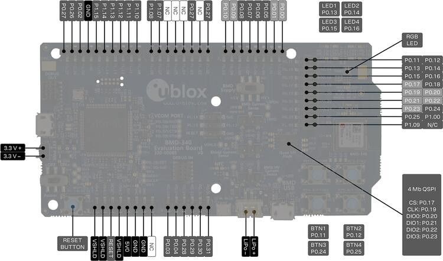

EVK-BMD-34/48: BMD-380-EVAL
u-blox EVK-BMD-34/48: BMD-380-EVAL
Overview
The BMD-380-EVAL hardware provides support for the u-blox BMD-380 Bluetooth 5.0 module, based on The Nordic Semiconductor nRF52840 ARM Cortex-M4F CPU and the following devices:
ADC
CLOCK
FLASH
GPIO
I2C
MPU
NVIC
PWM
RADIO (Bluetooth Low Energy and 802.15.4)
RTC
Segger RTT (RTT Console)
SPI
UART
USB
WDT

BMD-340-EVAL (Credit: u-blox AG)
Note
The BMD-380-EVAL shares the same pin headers and assignments as the BMD-340-EVAL with four exceptions. The BMD-340-EVAL is shown here. See the pin tables below for the exceptions.
More information about the BMD-340-EVAL and the BMD-340 module can be found at the u-blox website [1]. All of the Nordic Semiconductor examples for the nRF52840 DK (nrf52840dk_nrf52840) may be used without modification.
Hardware
The BMD-380 on the BMD-380-EVAL contains an internal high-frequency oscillator at 32MHz. There is also a low frequency (slow) oscillator of 32.768kHz. The BMD-380 itself does not include the slow crystal; however, the BMD-380-eval does.
Note
When targeting a custom design without a slow crystal, be sure to modify code to utilize the internal RC oscillator for the slow clock.
Supported Features
The ubx_bmd380eval board supports the hardware features listed below.
- on-chip / on-board
- Feature integrated in the SoC / present on the board.
- 2 / 2
-
Number of instances that are enabled / disabled.
Click on the label to see the first instance of this feature in the board/SoC DTS files. -
vnd,foo -
Compatible string for the Devicetree binding matching the feature.
Click on the link to view the binding documentation.
Connections and IOs
LED
LED1 (red) = P0.13
LED2 (red) = P0.14
LED3 (green) = P0.15
LED4 (green) = P0.16
D5 (red) = OB LED 1
D6 (green) = OB LED 2
External Connectors

Note
The BMD-380-EVAL shares the same pin headers and assignments as the BMD-340-EVAL with four exceptions. The BMD-340-EVAL is shown here. See the pin tables below for the exceptions.
Note
The pin numbers noted below are referenced to the pin 1 markings on the BMD-380-EVAL for each header
J-Link Prog Connector (J2)
PIN # |
Signal Name |
|---|---|
1 |
VDD |
2 |
IMCU_TMSS |
3 |
GND |
4 |
IMCU_TCKS |
5 |
V5V |
6 |
IMCU_TDOS |
7 |
Cut off |
8 |
IMCU_TDIS |
9 |
Cut off |
10 |
IMCU_RESET |
Debug OUT (J3)
PIN # |
Signal Name |
|---|---|
1 |
EXT_VTG |
2 |
EXT_SWDIO |
3 |
GND |
4 |
EXT_SWDCLK |
5 |
GND |
6 |
EXT_SWO |
7 |
N/C |
8 |
N/C |
9 |
EXT_GND_DETECT |
10 |
EXT_RESET |
Debug IN (J26)
PIN # |
Signal Name |
|---|---|
1 |
BMD-340_VCC |
2 |
BMD-340_SWDIO |
3 |
GND |
4 |
BMD-340_SWDCLK |
5 |
GND |
6 |
BMD-340_SWO |
7 |
N/C |
8 |
N/C |
9 |
GND |
10 |
BMD-340_RESET |
Auxiliary (J9)
PIN # |
Signal Name |
|---|---|
1 |
P0.10 / NFC2 |
2 |
P0.09 / NFC1 |
3 |
P0.08 |
4 |
P0.07 |
5 |
P0.06 |
6 |
P0.05 / AIN3 |
7 |
P0.01 / XL2 |
8 |
P0.00 / XL1 |
Auxiliary (J10)
PIN # |
Signal Name |
|---|---|
1 |
P0.11 / TRACED[2] |
2 |
P0.12 / TRACED[1] |
3 |
P0.13 |
4 |
P0.14 |
5 |
P0.15 |
6 |
P0.16 |
7 |
P0.17 / QSPI_CS |
8 |
P0.18 / RESET |
9 |
P0.19 / QSPI_CLK |
10 |
P0.20 / QSPI_D0 |
11 |
P0.21 / QSPI_D1 |
12 |
P0.22 / QSPI_D2 |
13 |
P0.23 / QSPI_D3 |
14 |
P0.24 |
15 |
P0.25 |
16 |
P1.00 / TRACED[0] |
17 |
P1.09 / TRACED[3] |
18 |
No connection |
Power (J5)
PIN # |
Signal Name |
BMD-380 Functions |
|---|---|---|
1 |
VSHLD |
N/A |
2 |
VSHLD |
N/A |
3 |
RESET |
P0.18 / RESET |
4 |
VSHLD |
N/A |
5 |
V5V |
N/A |
6 |
GND |
N/A |
7 |
GND |
N/A |
8 |
N/C |
N/A |
Analog in (J8)
PIN # |
Signal Name |
BMD-380 Functions |
|---|---|---|
1 |
A0 |
P0.03 / AIN1 |
2 |
A1 |
P0.04 / AIN2 |
3 |
A2 |
P0.28 / AIN4 |
4 |
A3 |
P0.29 / AIN5 |
5 |
A4 |
P0.30 / AIN6 |
6 |
A5 |
P0.31 / AIN7 |
Digital I/O (J7)
PIN # |
Signal Name |
BMD-380 Functions |
|---|---|---|
1 |
D7 |
P1.08 |
2 |
No connection |
|
3 |
D5 |
P1.06 |
4 |
D4 |
No connection |
5 |
No connection |
|
6 |
No connection |
|
7 |
D1 (TX) |
P1.02 |
8 |
No connection |
Digital I/O (J6)
PIN # |
Signal Name |
BMD-380 Functions |
|---|---|---|
1 |
SCL |
P0.27 |
2 |
SDA |
P0.26 |
3 |
AREF |
P0.02 / AIN0 |
4 |
GND |
N/A |
5 |
D13 (SCK) |
P1.15 |
6 |
D12 (MISO) |
P1.14 |
7 |
D11 (MOSI) |
P1.13 |
8 |
D10 (SS) |
P1.12 |
9 |
D9 |
P1.11 |
10 |
D8 |
P1.10 |
J11
PIN # |
Signal Name |
BMD-380 Functions |
|---|---|---|
1 |
D12 (MISO) |
P0.14 |
2 |
V5V |
N/A |
3 |
D13 (SCK) |
P0.15 |
4 |
D11 (MOSI) |
P0.13 |
5 |
RESET |
N/A |
6 |
N/A |
N/A |
Programming and Debugging
Applications for the BMD-380-EVAL board configurations can be built and flashed in the usual way (see Building an Application and Run an Application for more details); however, the standard debugging targets are not currently available.
Flashing
Follow the instructions in the Nordic nRF5x Segger J-Link page to install and configure all the necessary software. Further information can be found in Flashing. Then build and flash applications as usual (see Building an Application and Run an Application for more details).
Here is an example for the Hello World application.
First, run your favorite terminal program to listen for output.
$ minicom -D <tty_device> -b 115200
Replace <tty_device> with the port where the BMD-380-EVAL
can be found. For example, under Linux, /dev/ttyACM0.
Then build and flash the application in the usual way.
# From the root of the zephyr repository
west build -b ubx_bmd380eval/nrf52840 samples/hello_world
west flash
Debugging
Refer to the Nordic nRF5x Segger J-Link page to learn about debugging u-blox boards with a Segger J-LINK-OB IC.
Using UART1
The following approach can be used when an application needs to use more than one UART for connecting peripheral devices:
Add device tree overlay file to the main directory of your application:
&pinctrl { uart1_default: uart1_default { group1 { psels = <NRF_PSEL(UART_TX, 0, 14)>, <NRF_PSEL(UART_RX, 0, 16)>; }; }; /* required if CONFIG_PM_DEVICE=y */ uart1_sleep: uart1_sleep { group1 { psels = <NRF_PSEL(UART_TX, 0, 14)>, <NRF_PSEL(UART_RX, 0, 16)>; low-power-enable; }; }; }; &uart1 { compatible = "nordic,nrf-uarte"; current-speed = <115200>; status = "okay"; pinctrl-0 = <&uart1_default>; pinctrl-1 = <&uart1_sleep>; pinctrl-names = "default", "sleep"; };
In the overlay file above, pin P0.16 is used for RX and P0.14 is used for TX
Use the UART1 as
DEVICE_DT_GET(DT_NODELABEL(uart1))
Overlay file naming
The file has to be named <board>.overlay and placed in the app
main directory to be picked up automatically by the device tree
compiler.
Selecting the pins
Pins can be configured in the board pinctrl file. To see the available mappings, open the data sheet for the BMD-380 at the u-blox website [1], Section 2 ‘Pin definition’. In the table 3 select the pins marked ‘GPIO’. Note that pins marked as ‘Standard drive, low frequency I/O only (<10 kH’ can only be used in under-10KHz applications. They are not suitable for 115200 speed of UART.